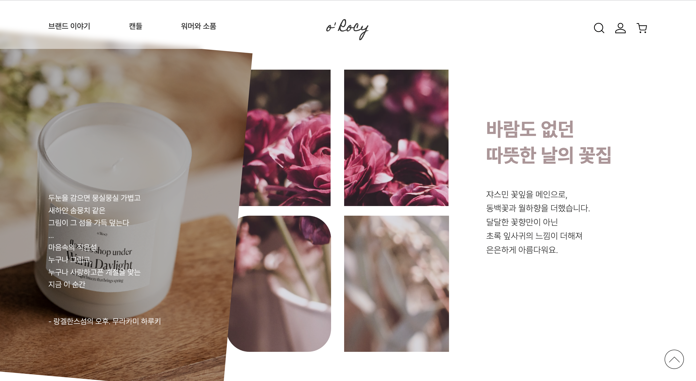

PROJECT PLANNING
프로젝트 오롯이에서는 텐바이텐에 입점되어 있는 문구 브랜드 살림가게오롯이의 캔들 쇼핑몰 메인 페이지를 제작했습니다.
모바일 기기 및 태블릿, PC 화면 모두에 적합한 반응형 구조로 퍼블리싱하였습니다.
사용한 이미지 및 텍스처는 자연친화적이며 여유로운 이미지를 지향하는 브랜드와 조화롭게 어울리는 비주얼이 될 수 있으면 했습니다.
보기만 해도 깨끗한 코튼향이 날 것 같은, 아늑하고도 부드러운 느낌을 UI 디자인의 컨셉트로 잡았습니다.
메인 페이지에 디스플레이된 캔들 상품의 이미지에 마우스를 올리면 서서히 나타나는 시 구절을 읽어볼 수 있습니다.
작은 디테일에서도 사용자가 브랜드만의 감성을 느낄 수 있기를 바랍니다.
take a glimpse
 봄이 내일 올 것 같은 밤바람.
봄이 내일 올 것 같은 밤바람.
scent for you
HTML | CSS | JavaScript | jQuery
DEVELOPMENT ENVIRONMENT - Adobe XD, Photoshop, VSCode